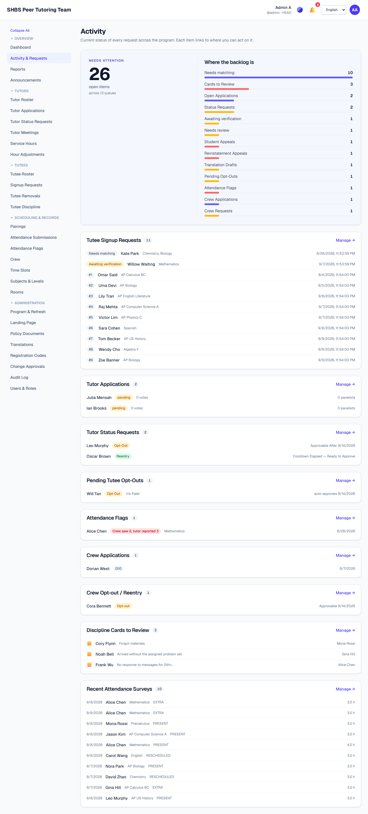
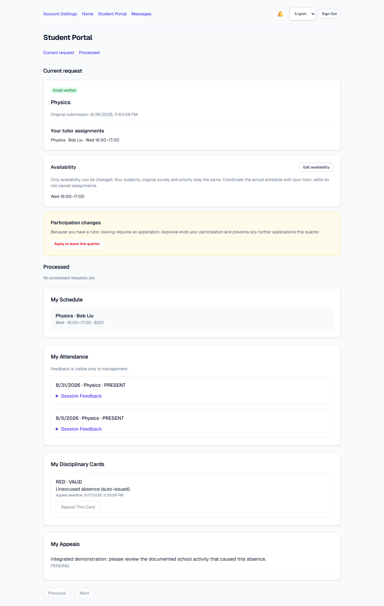
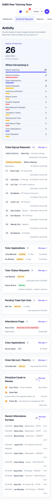

Release readiness,
checked end to end.
Reviewed workflows pass · local release candidateThe review follows participants from signup to service records, and organizers from incoming demand to reviewed decisions. The focused fixes have been reviewed again; the refreshed preview includes their tested revisions. Follow the PR links for merge records.
Baseline: 61985de0 after PRs 9–10. No deployment. Production email and approved school content remain launch setup.
What was missing, and what changed
| Area | Before this review | Resolution and evidence | Change |
|---|---|---|---|
| Membership decisions | Competing submission, recall and approval could duplicate requests or overwrite a decision. | One member lock and transaction cover state, notification and audit. Stale decisions fail. Fourteen database regressions cover races and rollback. | PR #11 |
| Published page URLs | Pages and sections could concurrently claim the same /p/slug; long collision suffixes could exceed validation limits. | Shared URL reservation is atomic, including approval replay. Seven regression cases; existing published URLs are preserved. | PR #12 |
| Interview authority | A generic status edit could reject or reset a panel-owned application without its votes and chair decision. | Panel outcomes use the assigned interview workflow. Pre-panel screening remains available. Coordinator chair decisions still require ADMIN/HEAD review. | PR #13 |
| Demo database | No student accounts or modern review queues; invalid fixture IDs caused seven rejected patrol attempts; obsolete panels lacked qualifications or completion credits. | Valid IDs, modern participant states, exact consent evidence and legal panels with actual-duration credit. Two seed runs show no count drift; shared workflow validators pass. | PR #14 |
| Collective tracking | The Activity total missed unverified survey demand and newer review queues, so an empty-looking dashboard could hide work. | Exact, deduplicated, role-scoped queue counts and direct action links. Pending work is visible without paging through historical records. | PR #15 |
| Attendance integrity | Future dates and omitted/duplicate roster members could create incorrect service records. | School-date validation and exact merged-roster coverage are enforced on the server. A real extra-session submission refreshed the dashboard from 16.8 h to 19.8 h without reloading. | PR #16 |
| Participant controls | Unauthorized translation composer, missing role labels, and duplicate/invalid card-appeal actions. | Capability-gated pages, an account API that carries the translation flag, complete locale labels, and consistent server/UI appeal validation. Registration-code instructions now correctly explain that authorized staff can review stored codes. Closed interviews show recorded votes without editable voting controls. | PR #17 |
| Older interview records | A newest-50 cap made older panels impossible to manage. | Search, exact totals and paginated incomplete/completed views preserve access to all panels. A 55-panel regression checks old history. | PR #18 |
| Student appeal queues | Pending cases were mixed with closed history, making current work difficult to find. | Separate pending/history views with exact totals and pagination; component and database regressions cover navigation. | PR #19 |
| Validation messages | Rejected form inputs could expose a serialized validation object. | Concise summaries retain structured field details and approval identifiers. Four transport regressions cover the error contract. | PR #20 |
| Translation conflicts | Approving an older proposal could overwrite text changed since submission. | Exact destination snapshots and shared transactions protect five translation types. Legacy proposals require explicit resubmission; metadata stays out of the review text. | PR #21 |
| Room conflict feedback | Database safeguards rejected invalid bookings, but scheduling forms could surface low-level failures. | Shared scheduling transactions return clear conflicts for pairings, slot propagation and blackouts. Adjacent bookings remain valid; six API regressions supplement the existing database boundary. | PR #22 |
Two suspected integrity gaps were disproved: coordinator translation writes already pass through approval middleware, and database triggers already block room conflicts. The room change improves conflict messages and transaction coherence; it does not introduce the underlying guarantee.
Second review before merging
Independent cross-review and a fresh combined check found six additional defects. Each correction stays in its original focused PR.
- Interview authority: scheduling now locks the interview before checking the current chair; replacement races cannot authorize a former chair. Schedule changes and notifications roll back together.
- Activity failures: incomplete or failed queue requests show an actionable alert and an unknown total, never a false all-clear.
- Appeal history: each card carries its own appeal-existence result, independent of the displayed history page.
- Pagination ties: an ID tie-breaker keeps same-timestamp interview records stable across pages.
- Test isolation: destructive room fixtures fail closed unless the target is an explicit local test database; connection overrides are rejected.
- Container publication: newer runs cancel stale work, publication is limited to main, and a current-main SHA guard rejects old reruns before publishing.
Translation documentation now distinguishes UI-string language validation from the existing ability to edit retained landing translations. Shared CMS and scheduling imports were reconciled when combining overlapping branches. CI also caught a stale technical-guide HTML edition; regeneration restored the documentation gate.
Can each role complete its work?
Page inspection and completed actions are reported separately. Expand the evidence for the exact scope; passing a route load alone does not prove a workflow.
Participant walkthrough evidence
| Role | Completed through the UI | Evidence |
|---|---|---|
| Student | Survey → email link → password → sign-in → availability edit → assignment. Saved feedback persists after reload; messages remain private. A fresh card appeal appears in the staff pending queue and disables another submission. | Baseline walkthrough + fresh demo |
| Student after review | Card appeal upheld; card becomes INVALID. Approved withdrawal removes every assignment, retains session history and blocks the quarter. | UI receipt + database invariants |
| Tutor | Extra attendance for both remaining pupils; 35 minutes yields 3 hours under the confirmed calculator. Advance meeting excuse recorded. | Saved form + 35 min / 2 pupils / 3 h |
| Recruit | Application → chair outcome → HEAD approval → issued code → email verification → account creation → sign-in → signed tutor policy. | Fiona active, verified, consent retained |
| Crew | All seven rooms recorded in one patrol; portal credits 0.5 h and shows the new round. | Valid-room fixture fixes reproduced |
| Translator | Authorized editor loads; a fresh proposal is saved and approved. A legacy draft is rejected with explicit resubmission guidance instead of overwriting content. | Final UI walkthrough + destination regressions |
| Viewer | Verification and password creation; read-only management navigation. | Baseline walkthrough |
Organizer walkthrough evidence
HEAD and coordinator navigation covered all listed management destinations: activity, reports, announcements, tutor/application/membership/meeting/hour tools, student intake/discipline/removals, pairings, attendance/flags, crew, rooms/slots/subjects, program settings, page/policy/translation tools, codes, approvals, audit and users.
Actual decisions included a student card appeal, quarter withdrawal and coordinator interview proposal. Database verification confirmed Carol remained the chair while HEAD was the approving reviewer; Frank had zero remaining assignments and a quarter block; the recruit became an active, verified tutor with policy consent.
Role-specific data visibility, stale/concurrent writes and negative inputs are additionally exercised by the automated suite. Final integrated visual checks cover the newly changed tracking and permission pages.
Performance and resource limits
Earlier audit: 480 paced reads, zero failures. Second-review build: another 384 paced page/protected-API reads at concurrency 1, 2, 4 and 6, zero HTTP or tRPC failures, worst-stage p95 70 ms. Final server working set stayed at or below 378 MB, with at least 4488 MB free memory. The refreshed build retained at least 2964 MB free.
App revision 4b6f640: npm run check passed with 16 existing warnings; npm test -- --maxWorkers=1 passed 403 tests in 48 files. Documentation checks and six documentation/workflow contract tests passed. The production build used webpack and two workers; the running preview uses the standalone output. Each PR must pass verification at its reviewed head before merging. The refreshed browser check also simulated an Activity request failure, checked the disabled appeal control, and recorded zero page errors and no mobile overflow.
One PostgreSQL cluster uses 32 MB shared buffers and 25 connections. The application has a 1.5 GB heap cap. Load stops below 1.5 GB free memory or above 1.2 GB server working set. Builds, test suites and browser sessions run serially. This local sample detects regressions; it does not certify production capacity, long-duration endurance or every possible input.
Visual evidence
{kind=link}

{kind=link}

{kind=link}

A database that supports the program
Scaffolded now
Assigned and waiting students; unverified demand; recalled, withdrawn and disqualified requests; exact policy snapshots; feedback, appeals, messages and calendar overrides; tutor and crew lifecycle; qualified interview panels; future meetings; current and historical hours.
Keep the important distinctions
Login identity, participation history, tutor identity, crew membership and translation capability are separate. Historical ownership and signed policy text survive later changes. Survey priority and terminal states stay protected.
The fresh demo has zero active room-booking overlaps and zero blackout collisions. Existing histories were retained during the walkthrough.
Session rounding remains unchanged: 35 min → 1 h, 70 min → 1 h, 71 min → 1.5 h before the student multiplier. Interviews use recorded minutes ÷ 60.
Before extending the schema
- Inventory duplicate pending membership requests before adding a uniqueness constraint; preserve evidence and resolve each explicitly.
- Define retention and orphan checks before account deletion or imports. Blanket cascading foreign keys would erase historical actor evidence.
- Keep one active term and one HEAD; verify these invariants after imports and backup restoration.
- Availability remains advisory. Clearing the default slot retains the copied meeting time; it does not cancel the pairing. These mechanics were preserved. Current tracking counts submitted records and pending requests. Expected-session and patrol ledgers need operational term dates, holidays, cancellations, deadlines and assigned patrol duties before missing-work alerts can be reliable.
- For larger usage, measure query plans before adding indexes; paginate growing lists and move large media to object storage.
- A durable email outbox and scheduled expired-token cleanup improve operations. Multi-school hosting needs tenant-scoped identities, permissions and unique keys throughout.
Ready locally; launch setup stays explicit
Try the combined preview
Open the test website · Local email inbox
HEAD: admin
Student: emma@example.test
Tutor: alice@example.edu
Coordinator: carol@example.edu
Demo password: Password123!
Local self-signed HTTPS. Mail stays on this machine. Test credentials are synthetic and must never be used for production.
Before a real launch
- Use the reviewed main revision and its passing verification run; the local preview contains the same application changes.
- Configure the chosen host/domain, real SMTP, production secrets and backups; test restoration and delivery.
- Approve school-specific policies/content and publish them through the application.
These remain intentionally deferred under your earlier instructions. No deployment or real email delivery was performed.